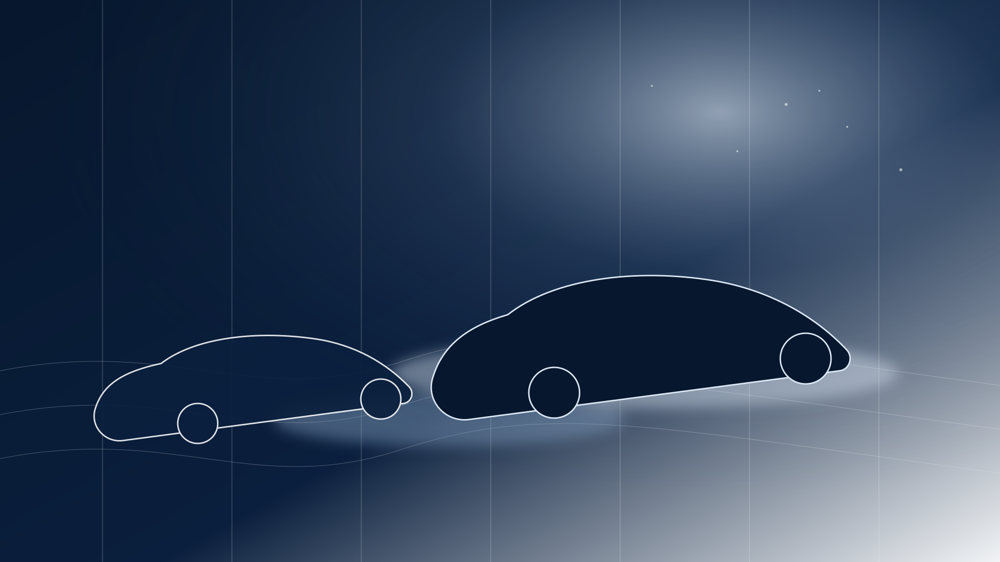
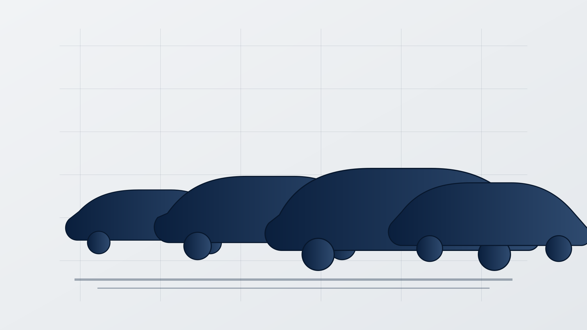
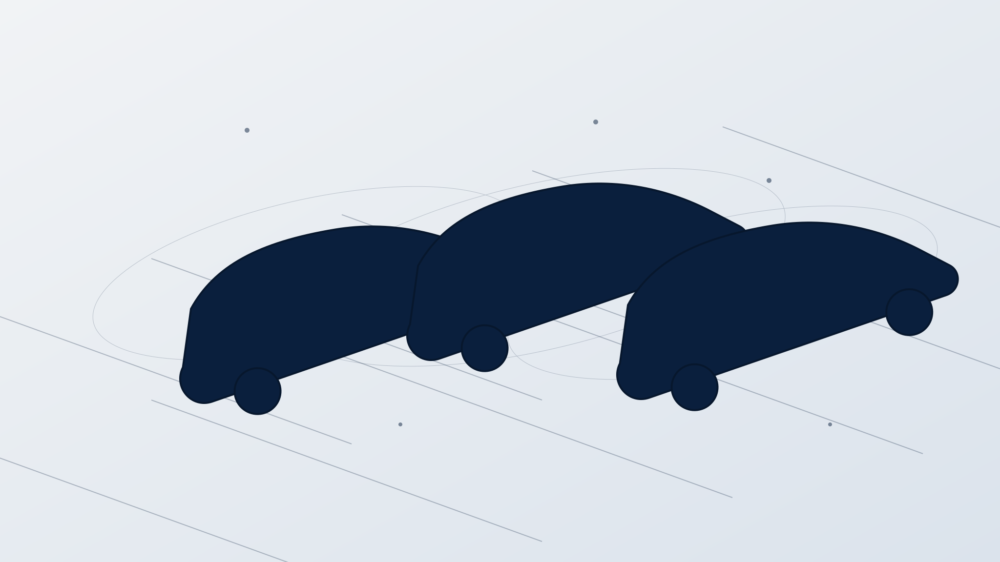
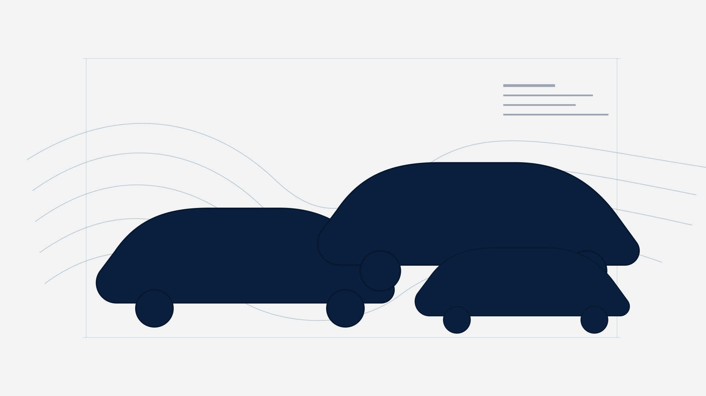
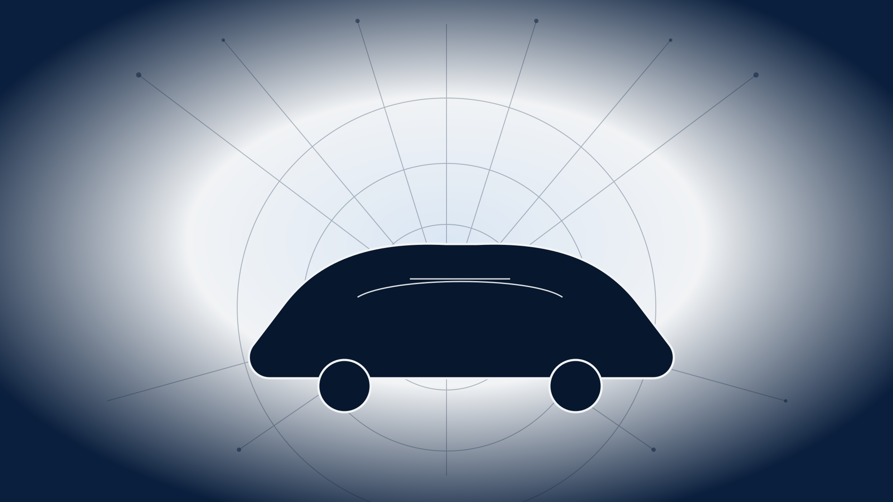
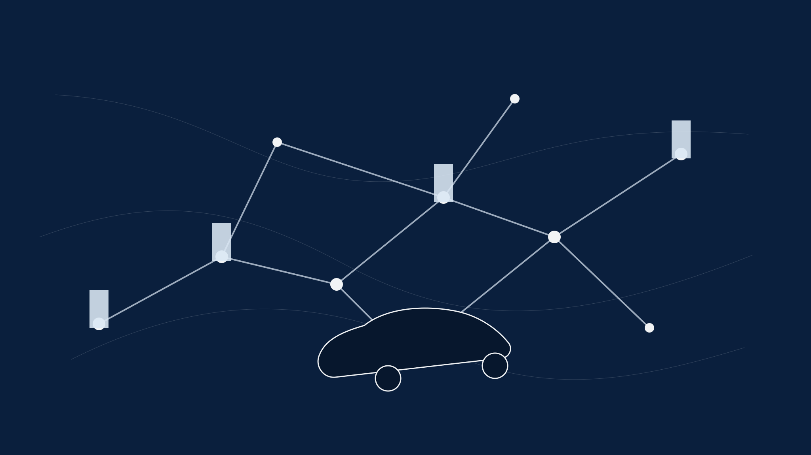
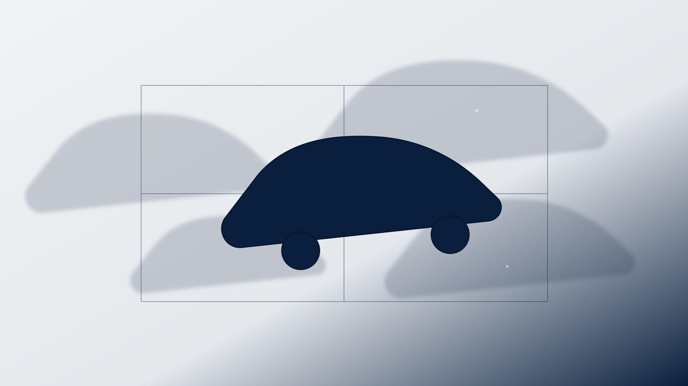

Vol. 01 · China EVTESLA PRODUCT DOSSIER
2026 · 中国市场视角
Tesla
再校准
从 Model 3 / Y 的产品力，到中国新能源车的局部反攻：这是一份面向商业判断的产品介绍、竞争分析与竞品对比。
MODEL 3MODEL YCHINA BENCHMARK

Opening ThesisMARKET LOGIC
核心判断
Tesla 仍是标杆，
但中国市场已经不再只问
谁把电动车做对。
新的问题是：谁能把车、手机、补能、智能驾驶、服务和价格一起卷动。
ContextGLOBAL SCALE
规模不是护城河本身，但它决定试错速度
Tesla 的底盘仍然是全球级效率机器。
2025 DELIVERIES1.636M全年交付约 163.6 万辆，仍处在全球新能源车第一梯队。
MODEL 3 / Y1.585M主力车型贡献绝大多数交付，产品组合高度集中。
Q1 2026358K季度交付 35.8 万辆，需求波动开始更显性。
ENERGY STORAGE 202546.7GWh能源业务成为第二增长曲线，不只是造车叙事。
China VariablesWHAT CHANGED
中国市场的比较维度变厚了
产品力正在从单点参数，变成一整套使用体验。
FIVE VARIABLES
01价格带竞品用更密的配置梯度压缩 Tesla 的溢价空间。
02补能超充网络仍强，但 800V 快充叙事正在夺取注意力。
03座舱本土生态把手机、车机、家居服务连成闭环。
04智驾用户开始用本地城市体验而不是全球愿景做判断。
05渠道直营效率对上强门店、强服务、强社群的组合拳。
Product LineMODEL 3 / MODEL Y
主力不是完整家族，而是两张王牌
Model 3 负责效率轿车，Model Y 负责家庭 SUV。
在中国语境里，Tesla 的真实战场集中在两个高频价位段：中型纯电轿车与中型纯电 SUV。

LOCAL HERO SET · MODEL 3 / MODEL Y
Model 3SEDAN CORE
不是运动轿车，而是效率标准件
Model 3 的强项，是把续航、能耗、加速和软件体验压进一个极简产品。
它不像很多中国竞品那样堆功能，而是把选择变少，把交付稳定性做成体验的一部分。
PRODUCT READ · MODEL 3 CHINA
Model 3SPEC SNAPSHOT
官方中国页面参数
Model 3 的参数表达，仍围绕三件事：跑得远、开得快、空间够。
LONG RANGE RWD830kmCLTC 续航，长续航后轮驱动版。
LONG RANGE AWD3.8s零百加速，长续航全轮驱动版。
STORAGE682L前后备箱合计储物空间。
Model 3USER FIT
谁会继续选 Model 3
它最适合对车辆本体效率敏感、但不想被复杂配置表消耗的人。
02
驾驶偏好清晰
低重心、直接转向、少层级操作构成核心愉悦。
03
换车周期理性
OTA、保值心智、全球服务网络降低长期不确定性。
04
不追逐全家桶
对手机车机生态、彩电冰箱式体验没有强依赖。
Model YSUV CORE
中国家庭车的默认参照物
Model Y 的价值不是某个参数突出，而是每个家庭高频场景都够用。
空间、能耗、视野、补能和品牌心智叠在一起，让它成为同级纯电 SUV 最难绕开的基准线。
Model Y 不是中国市场最会讲故事的 SUV，但它是很多竞品在配置页里默认要击穿的对象。
PRODUCT READ · MODEL Y CHINA
Model YSPEC SNAPSHOT
官方中国页面参数
Model Y 把 SUV 的核心诉求压成四个词：长续航、大空间、强补能、低学习成本。
LONG RANGE RWD821kmCLTC 续航，长续航后轮驱动版。
LONG RANGE AWD750kmCLTC 续航，长续航全轮驱动版。
ACCELERATION4.3s长续航全轮驱动版零百加速。
STORAGE2138L最大储物空间，覆盖露营、亲子、长途出行。
Model YUSER FIT
谁会继续选 Model Y
家庭用户并不只买空间，也在买一次少出错的选择。
DECISION PATH
01孩子与行李大开口尾门、低门槛储物与后排屏幕降低日常摩擦。
02跨城出行超充网络让路线规划更可预期。
03多人共用极简交互对新驾驶者更友好。
04长期持有品牌认知、售后网络和 OTA 降低后续焦虑。
Tesla StrengthsWHY IT STILL MATTERS
优势不是单项冠军，而是系统级成熟
Tesla 的护城河，来自多个看似朴素的能力长期叠加。
06
品牌标尺
竞品常以 Tesla 为默认对照，反向强化其基准地位。
Tesla WeaknessesLOCAL PRESSURE
中国市场正在攻击它的空白处
当竞品不再模仿 Tesla，而是绕开它重新定义体验，压力就出现了。
01
座舱本地化
本土品牌更懂内容、语音、手机互联与家庭娱乐。
02
价格进攻
BYD 等品牌用更宽产品带制造价值锚点。
03
快充叙事
800V 与高倍率电池让“充得快”成为新宣传焦点。
04
智驾确定性
本地城市体验与监管节奏决定用户能否感知软件价值。
Act ISEDAN BATTLEFIELD
轿车战场
Model 3
守擂
它面对的不只是新轿车，而是新品牌叙事、价格体系和本土生态的合围。

SEDAN FIELD · CHINA EV
Model 3 vs Xiaomi SU7ATTENTION ECONOMY
Tesla Model 3
成熟电动车产品
强在效率、驾驶一致性、软件更新和长期品牌心智。BASELINE · EV STACK
Model 3 的卖点更像“少解释也能成立”的标准答案：参数稳定、补能清楚、产品路径简单。
Xiaomi SU7
流量型性能轿车
强在性能叙事、手机车家生态和社交传播效率。CHALLENGER · ECOSYSTEM
小米把车放进“人车家全生态”，用户买到的不只是轿车，也是一套熟悉的数字生活入口。
Model 3 vs BYD HanVALUE PRESSURE
Tesla Model 3
品牌标杆 + 纯电效率
用更少车型配置承担更高的品牌期待。
BYD Han
中国主流价值锚
用多能源路线、多价格配置和渠道密度拿下更宽用户层。
强项
价格弹性、电池安全叙事、品牌覆盖和本土渠道。
BYD
Model 3 vs BYD SealSEGMENTATION
Model 3
一套产品打一个核心价位
优势在于清晰：用户不用研究太多版本，就能理解它为什么贵一点。
Seal Family
多车系覆盖细分需求
优势在于密度：通过更细的价位、尺寸、动力与配置组合，持续把 Model 3 的潜客分流。
轿车战场的本质，是“标准答案”对抗“细分答案”。SEDAN SUMMARY
Sedan TakeawayMODEL 3
轿车结论
Model 3 不是最会抢热搜的轿车，
但仍是最像“度量衡”的轿车。
它的风险，是中国竞品正在把度量衡之外的体验做得越来越重。
Act IISUV BATTLEFIELD
SUV 战场
Model Y
被围攻
中国品牌把家庭 SUV 做成了价格、科技、服务与生态的集中火力点。

SUV FIELD · CHINA EV
Model Y vs Xiaomi YU7ECOSYSTEM ATTACK
Tesla Model Y
效率型家庭 SUV
CLTC RANGE821km长续航后驱版，官方中国页面。
Model Y 的优势是稳定、简单和补能确定性。
Xiaomi YU7
生态型性能 SUV
YU7 RANGE CLAIM835km小米发布会披露的最长续航版本。
YU7 试图把家庭 SUV 变成人车家生态的高价值终端。
Model Y vs XPeng G6SMART EV
Model Y
家庭默认选择
强在品牌心智、空间、能耗与超充网络。
购买理由偏稳：少试错，少解释。TESLA ADVANTAGE
XPeng G6
智能与快充进攻
官方配置页强调 625 km CLTC、12 分钟 10%-80% 快充与智能辅助驾驶芯片方案。
购买理由偏新：用本土智能体验解释价值。XPENG G6
Model Y vs NIO ES6SERVICE PREMIUM
Model Y
效率与极简
它把家庭 SUV 的决策压缩到续航、空间、补能和品牌信任。
NIO ES6
服务与社群
ES6 更强调服务网络、换电体验、豪华感和用户社区。
Model Y vs Zeekr 7X800V LUXURY
Model Y
成熟平台
MAX STORAGE2138L空间实用性仍是家庭 SUV 的硬指标。
Model Y 的打法是把高频场景做稳。
Zeekr 7X
高压快充 + 豪华配置
FAST CHARGE CLAIM10.5min75 kWh 版本官方披露 10%-80% 快充时间。
Zeekr 更像用豪华、底盘与补能效率打穿中高端 SUV。
Model Y vs BYD Song FamilyVOLUME GAME
Model Y
高价值单品
用一个强单品守住中高端纯电家庭用户。
优势在品牌，但价格带向下延展有限。PREMIUM SINGLE HERO
BYD Song Family
大规模家庭车矩阵
通过纯电与插混、多尺寸、多价位组合覆盖更宽需求。
优势在规模，但单车高级感与全球科技心智不同。MASS MARKET MATRIX
SUV TakeawayMODEL Y
SUV 结论
Model Y 仍是中国纯电 SUV 的标尺，
但标尺旁边已经摆满了新答案。
竞品不是只在一个点上超越它，而是在不同用户场景里拆解它。
Act IIIINTELLIGENCE
智能化竞争
软件
兑现
中国用户看见的，不是全球路线图，而是今天能不能在本地道路、本地座舱、本地服务里工作。

SENSORS · SOFTWARE · REGULATION
Autopilot / FSDBOUNDARY
官方边界要讲清楚
Tesla 的软件价值很强，但在中国要区分“能力预期”和“可用体验”。
BASIC AUTOPILOT辅助官方中国页面将基础版辅助驾驶作为驾驶员监督下的功能表达。
FSD EXPECTATION预期用户对高阶辅助驾驶有期待，但落地取决于本地合规与版本节奏。
USER PROOF体验最终竞争会回到高频通勤路段的稳定性与信任感。
Local ADASCHINA RIVALS
本土品牌在用“城市体验”重写评判标准
在中国，高阶辅助驾驶不是发布会功能，而是城市路况中的口碑资产。
COMPETITIVE PRESSURE
01XPeng持续强调智能驾驶与快充组合，形成“智能纯电”心智。
02NIO用传感器、服务和换电网络构建高端体验。
03Huawei 系把座舱、智驾与渠道流量打包成强系统方案。
04Li Auto用家庭场景与智能座舱降低学习成本。
CockpitLOCALIZATION
座舱不只是屏幕数量
Tesla 的极简座舱是审美，也是边界。
15.4 英寸中控屏、后排屏、OTA 和统一交互构成 Tesla 体验；但中国用户越来越习惯车机承接手机、视频、语音、家居与服务。
极简的优点是少干扰；极简的风险，是当用户开始期待更多入口时，它看起来“不够本地”。
COCKPIT TAKEAWAY
Act IVCHARGING & ECOSYSTEM
补能与生态
15 分钟
的战争
当所有人都能讲长续航，补能速度、站点可用性和路线确定性就变成体验差异。

SUPERCHARGER · FAST CHARGE · ROUTE
SuperchargerNETWORK ADVANTAGE
补能是 Tesla 最容易被低估的产品
超充网络把“能不能开远”翻译成“敢不敢规划”。
GLOBAL NETWORK80K+Tesla 官方超充页面披露全球 Supercharger 超过 80,000 个。
PEAK POWER250kWV3 / V4 Supercharger 峰值功率口径。
15 MINUTES250km官方表述：最快 15 分钟补充约 250 km 续航。
Fast Charge Pressure800V NARRATIVE
对手正在改变补能话术
Tesla 讲网络确定性，中国竞品讲高压快充的瞬时效率。
XIAOMI YU712min发布会披露 10%-80% 充电时间；另有 15 分钟补能 620 km 表述。
XPENG G612min官方配置页披露 10%-80% 快充时间。
ZEEKR 7X10.5min75 kWh 版本官方披露 10%-80% 快充时间。
注：CLTC、WLTP、EPA 与快充口径不可直接横向等同，此处用于展示传播叙事。
EcosystemENTRY POINT
车正在成为生态入口
Tesla 把车做成软件终端，中国品牌把车接入生活系统。
ECOSYSTEM VECTOR
01手机账号、互联、应用生态迁移到车上。
02内容视频、音频、游戏与后排娱乐成为家庭场景。
03家居车与智能家居、能源设备、服务预约联动。
04服务门店、社群、充换电与保险维修影响长期体验。
05数据用户行为与路线场景反哺产品迭代。
StrategyWHAT TESLA NEEDS
战略判断
在中国，Tesla 不需要变成中国品牌，但必须让本地价值更可见。
01
价格纪律
用清晰版本和权益而非频繁降价维持品牌可信度。
02
座舱本地化
让内容、语音、手机互联与后排体验更贴近中国家庭。
03
补能可视化
把超充稳定性、站点可用性和路线体验讲得更直观。
04
软件兑现
把高阶辅助驾驶从期待管理推进到可感知的本地体验。
Risk MapWHERE IT CAN LOSE
风险列表
Tesla 在中国会输在“整体体验差一点”，而不是某个参数少一点。
01价格战钝化品牌频繁价格变化会削弱高端科技品牌心智。
02产品节奏变慢中国品牌的年度迭代速度会放大车型生命周期压力。
03座舱落差家庭娱乐、语音、手机互联若落后，会被日常高频放大。
04智驾落地不确定用户不为愿景长期等待，只为可用体验买单。
05快充话术被抢走网络优势需要转译，否则会被 800V 数字传播掩盖。
06生态入口旁落当车成为生活系统入口，极简可能从优势变成空白。
ClosingBENCHMARK STILL STANDS
最后一句
Tesla 不再是唯一答案，
但仍是一道很强的答案。
中国市场真正改变的，是所有答案都必须同时接受产品、生态、补能、价格和软件兑现的审问。
PRODUCTANALYSISCOMPARISON

TESLA AS BENCHMARK · CHINA EV